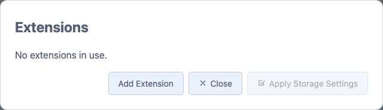
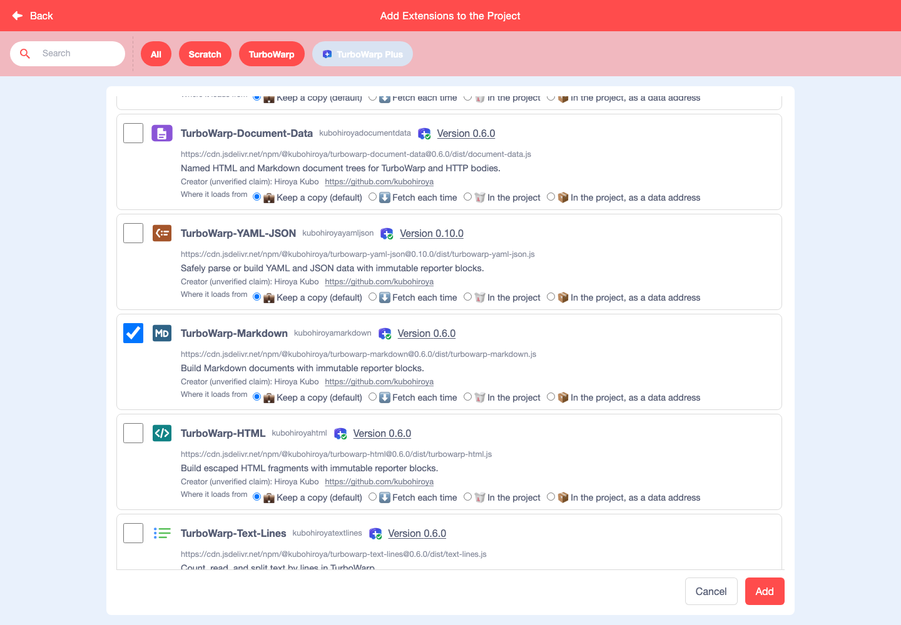
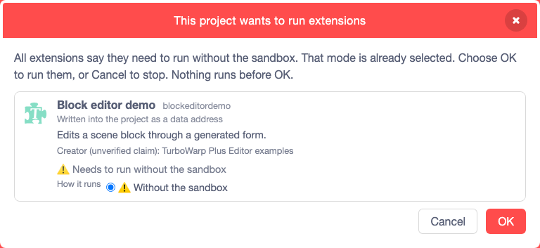
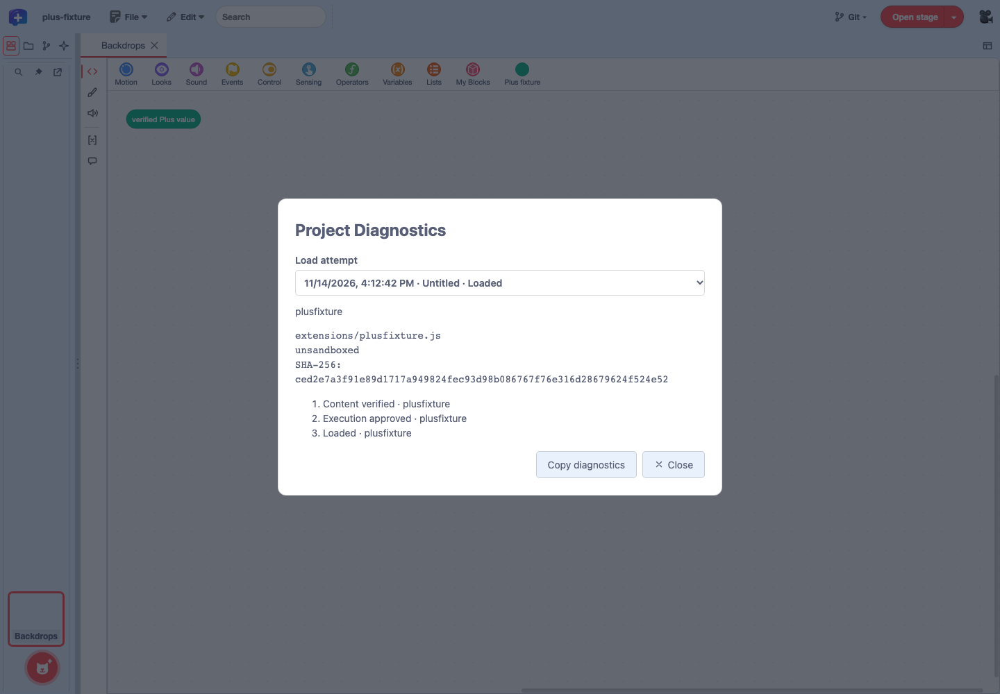
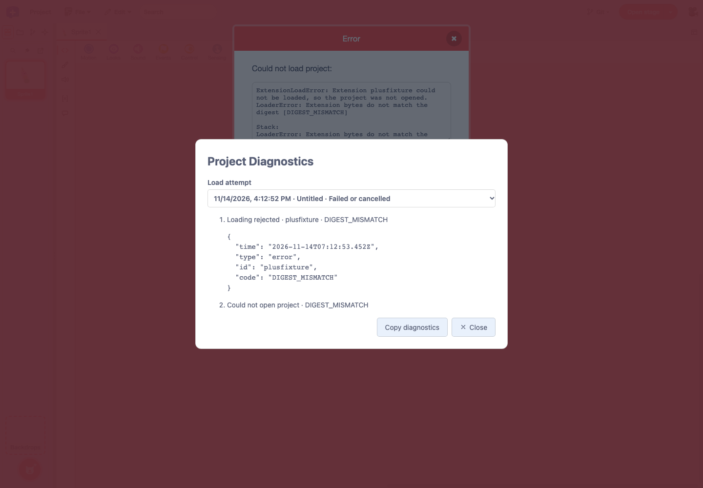

Feature guide 1/12 · Updated November 14, 2026
Open projects and prepare extensions
Start a new project, open an SB3 from your computer, and add extensions from the official catalog. Before opening a project that contains extensions, check where each extension comes from and how it will run.
1.1 Start a new project or open an SB3
When you open the public editor (GitHub Pages) in English, it starts with a new project. To switch to a new project while you work, choose "File" → "Create New Project".
Open a project from your computer with "File" → "Open SB3 File…". It opens SB3 files saved by Scratch 3 as well as by standard TurboWarp. You can also choose the older .sb and .sb2 formats, but they cannot be saved over, so after editing, use "Save As…" to make an .sb3. sb3-toolchain is a tool that unpacks an SB3 into separate files; this guide calls the folder it produces a "project folder". Open a project folder with "Open Project Folder…" (Open and save a project folder).

If you try to open a project whose unpacked size exceeds the standard limit (64 MiB), an "Open a Large Project" confirmation appears. It shows the approximate unpacked size and warns that the tab may use a lot of memory and stop responding. The project opens only if you choose "Open", and only this once (up to 256 MiB). "Don't Open" is selected by default. Do not open projects whose creator or source you do not recognize.
Reorganized File menu, saving and exporting · Loading limit for large SB3 files · Confirmation for projects over the limit
1.2 Follow the loading progress
While an SB3 is loading, the current step appears under "Loading Project", followed by the "Loading history". For large projects or projects with many extensions, you can see where the time goes.
| Shown as | What is happening |
|---|---|
| Preparing to open the project… | Receiving the file and starting to load it |
| Checking project data in the SB3… | Checking the Plus embedded data and the saved extension information |
| Validating and unpacking the SB3… | Checking the ZIP structure and unpacking it |
| Parsing the project… | Reading the project data (project.json) |
| Loading images and sounds… | Loading the assets, followed by "(loaded/total)" |
| Loading extensions… | Fetching and verifying extension code |
| Waiting for your confirmation… | Waiting for your choice in the extension review screen |
| Preparing the editor… | Showing the loaded project in the editor |
The "Loading history" lists each completed step with its time and the seconds elapsed since loading began. Until a step has completed, it shows "No previous steps yet." If loading fails, find the cause in the project diagnostics.
1.3 Add extensions from the catalog
Open "File" → "Extensions…" to see the extensions the project uses in the "Extensions" dialog. Press "Add Extension" to open the "Add Extensions to the Project" screen, then choose "TurboWarp Plus" at the top. In the Scratch layout, the extension button at the bottom left opens the same screen.
- Check the extensions to add. Besides the checkbox, you can also press an extension's icon to select it. Extensions it needs are selected automatically.
- With "How they all run" at the top, you can choose for all selected extensions at once whether they run "In the sandbox" or "Without the sandbox".
- Choose where the extension code loads from with "Where it loads from" ("Keep a copy (default)", "Fetch each time", "In the project", "In the project, as a data address"), for all at once with "Where they all load from", or for each extension. The same choice also decides how the extension code is stored when you save the project, so the "Extensions" dialog calls it the storage setting (Choose the storage format for extension code).
- Press "Add".


The editor treats extensions listed in the official catalog as trusted: it does not ask about them when a project opens, and runs them without the sandbox. Extension descriptions follow the editor's display language, and you can open links to the provider's website, the release and the creator's contact. To add an extension from a URL that is not in the catalog, use the standard "Custom Extension" under "All" or "TurboWarp".
One entry point for adding extensions · Run catalog extensions without review
1.4 Review how extensions will run before opening a project
When you open a project that contains extensions needing review, the "This project wants to run extensions" screen appears before anything runs. Plus-format extensions and ordinary custom extensions are reviewed together. Check where each one comes from, then choose its "How it runs" from "Do not run", "In the sandbox" and "Without the sandbox". With several extensions, "How they all run" at the top sets them all at once.

- "In the sandbox" is selected at first. Only when every extension in the project declares that it needs to run without the sandbox is "Without the sandbox" selected from the start; the other choices and "How they all run" are then hidden, and you either press "OK" to run them or "Cancel" to stop opening the project.
- If you choose another way to run for an extension that declares it needs to run without the sandbox, a warning appears.
- Extensions set to "Do not run" are not loaded, and their code is not fetched.
- For extensions distributed as a ZIP, the editor reads the extension name from the code in the ZIP whose SHA-256 matches, and shows it before anything runs. If the name cannot be determined, the extension ID is shown instead.
- The review screen can be moved, resized and maximized.
SHA-256 only confirms that the code matches what was recorded. An extension running without the sandbox can reach the project, the editor and this site's data. Choose "Without the sandbox" only for trusted code whose content and provider you have checked.
Extension names from inside ZIPs · Plus extensions use the same review screen · Stop fetching rejected extensions
1.5 When an extension fails to load
While the editor waits for extension code, a waiting dialog appears in the middle of the screen.
- If the catalog list fails to load, fetch it again with "Retry".
- If fetching extension code fails and trying again might succeed, and only then, "Try again" appears. The storage settings you chose are kept.
- For failures that trying again would not change, such as a hash mismatch or a 404 from the source, check the reason shown.
A detailed record of the failed attempt is available in the project diagnostics.
1.6 Read the diagnostics when a project will not open
Open "File" → "Project Properties" and press "Project Diagnostics…" at the bottom right to check how the project loaded. For Plus extensions, it shows the source, the run mode, the SHA-256 used to verify the code, and events such as verification, approval, retries and failures.

- Under "Load attempt" at the top, choose the attempt to check. The last 5 attempts are kept, each showing its latest 50 events.
- Expand an extension or event row to check the source, verification result, reason code, retry count and so on. A failed attempt can still be chosen after you open another project.
- "Copy diagnostics" copies the records of the chosen attempt. Where writing to the clipboard is not possible, it shows the text so you can select and copy it.
- Press "Close" or Esc to return to the editor. Opening and closing the diagnostics does not change the project data.
Open the diagnostics from a failure notice
When loading fails, a "Could not open the project." notice appears at the bottom of the screen. Press "View detailed log" in the notice to open the diagnostics for that attempt. After the notice is closed, records within the last 5 attempts can still be opened from "Project Diagnostics…" in the project properties. If a network error can be retried, use "Try again", shown as described in When an extension fails to load.

Verify and approve
Success, retry, failure
Choose, inspect, copy
How long the diagnostic records last
Records are kept only while the editor is open, and they disappear when you reload the page. Copied records include the project name, fetch URLs, failure reasons and so on. Viewing the records does not change whether an extension may run; that is chosen in the review screen before the project opens.